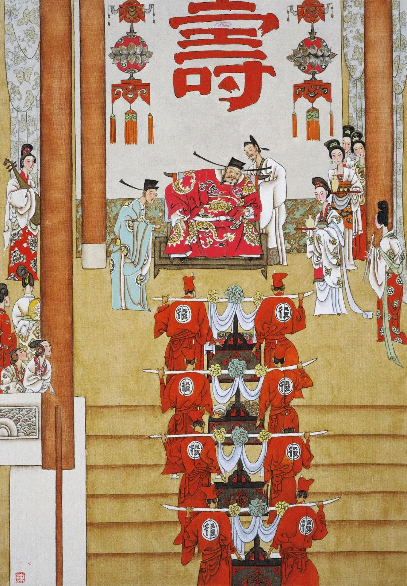

第五十六回 西门庆捐金助朋友 常峙节得钞傲妻儿#
诗曰：
清河豪士天下奇，意气相投山可移。济人不惜千金诺，狂饮宁辞百夜期。
雕盘绮食会众客，吴歌赵舞香风吹。堂中亦有三千士，他日酬恩知是谁？
话说西门庆留下两个歌童，随即打发苗家人回书礼物，又赏了些银钱。苗实领书，磕头谢了出门。后来不多些时，春燕死了，止春鸿一人，正是：
千金散尽教歌舞，留与他人乐少年。
却说常峙节自那日求了西门庆的事情，还不得到手，房主又日夜催逼。恰遇西门庆从东京回家，今日也接风，明日也接风，一连过了十来日，只不得个会面。常言道：见面情难尽。一个不见，却告诉谁？每日央了应伯爵，只走到大官人门首问声，说不在，就空回了。回家又被浑家埋怨道：“你也是男子汉大丈夫，房子没间住，吃这般懊恼气。你平日只认的西门大官人，今日求些周济，也做了瓶落水。”说的常峙节有口无言，呆瞪瞪不敢做声。到了明日，早起身寻了应伯爵，来到一个酒店内，便请伯爵吃三杯。伯爵道：“这却不当生受。”常峙节拉了坐下，量酒打上酒来，摆下一盘熏肉、一盘鲜鱼。酒过两巡，常峙节道：“小弟向求哥和西门大官人说的事情，这几日通不能会面，房子又催逼的紧，昨晚被房下聒絮了一夜，耐不的。五更抽身，专求哥趁着大官人还没出门时，慢慢的候他。不知哥意下如何？”应伯爵道：“受人之托，必当终人之事。我今日好歹要大官人助你些就是了。”两个又吃过几杯，应伯爵便推早酒不吃了。常峙节又劝一杯，算还酒钱，一同出门，径奔西门庆家里来。

那时，正是新秋时候，金风荐爽。西门庆连醉了几日，觉精神减了几分。正遇周内相请酒，便推事故不去，自在花园藏春坞，和吴月娘、孟玉楼、潘金莲、李瓶儿五个寻花问柳顽耍，好不快活。常峙节和应伯爵来到厅上，问知大官人在屋里，满心欢喜。坐着等了好半日，却不见出来。只见门外书童和画童两个抬着一只箱子，都是绫绢衣服，气吁吁走进门来，乱嚷道：“等了这半日，还只得一半。”就厅上歇下。应伯爵便问：“你爹在那里？”书童道：“爹在园里顽耍哩。”伯爵道：“劳你说声。”两个依旧抬着进去了。不一时，书童出来道：“爹请应二爹、常二叔少待，便来也。”两人又等了一回，西门庆才走出来。二人作了揖，便请坐的。伯爵道：“连日哥吃酒忙，不得些空，今日却怎的在家里？”西门庆道：“自从那日别后，整日被人家请去饮酒，醉的了不的，通没些精神。今日又有人请酒，我只推有事不去。”伯爵道：“方才那一箱衣服，是那里抬来的？”西门庆道：“目下交了秋，大家都要添些秋衣。方才一箱，是你大嫂子的。还做不完，才勾一半哩。”常峙节伸着舌道：“六房嫂子，就六箱了，好不费事！小户人家，一匹布也难得。哥果是财主哩。”西门庆和应伯爵都笑起来。伯爵道：“这两日，杭州货船怎的还不见到？不知买卖货物何如。这几日，不知李三、黄四的银子，曾在府里头开了些送来与哥么？”西门庆道：“货船不知在那里担搁着，书也没捎封寄来，好生放不下。李三、黄四的，又说在出月才关。”应伯爵挨到身边坐下，乘闲便说：“常二哥那一日在哥席上求的事情，一向哥又没的空，不曾说的。常二哥被房主催逼慌了，每日被嫂子埋怨，二哥只麻作一团，没个理会。如今又是秋凉了，身上皮袄儿又当在典铺里。哥若有好心，常言道：救人须救急时无，省的他嫂子日夜在屋里絮絮叨叨。况且寻的房子住着，也是哥的体面。因此，常二哥央小弟特地来求哥，早些周济他罢。”西门庆道：“我曾许下他来，因为东京去，费的银子多了，本待等韩伙计到家，和他理会。如今又恁的要紧？”伯爵道：“不是常二哥要紧，当不的他嫂子聒絮，只得求哥早些便好。”西门庆踌躇了半晌道：“既这等，也不难。且问你，要多少房子才够住？”伯爵道：“他两口儿，也得一间门面、一间客坐、一间床房、一间厨灶──四间房子，是少不得的。论着价银，也得三四个多银子。哥只早晚凑些，教他成就了这桩事罢。”西门庆道：“今日先把几两碎银与他拿去，买件衣服，办些家活，盘搅过来，待寻下房子，我自兑银与你成交，可好么？”两个一齐谢道：“难得哥好心。”西门庆便叫书童：“去对你大娘说，皮匣内一包碎银取了出来。”书童应诺。不一时，取了一包银子出来，递与西门庆。西门庆对常峙节道：“这一包碎银子，是那日东京太师府赏封剩下的十二两，你拿去好杂用。”打开与常峙节看，都是三五钱一块的零碎纹银。常峙节接过放在衣袖里，就作揖谢了。西门庆道：“我这几日不是要迟你的，你又没曾寻的。只等你寻下，待我有银，一起兑去便了。”常峙节又称谢不迭。三个依旧坐下，伯爵便道：“多少古人轻财好施，到后来子孙高大门闾，把祖宗基业一发增的多了。悭吝的，积下许多金宝，后来子孙不好，连祖宗坟土也不保。可知天道好还哩！”西门庆道：“兀那东西，是好动不喜静的，怎肯埋没在一处！也是天生应人用的，一个人堆积，就有一个人缺少了。因此积下财宝，极有罪的。”
正说着，只见书童托出饭来。三人吃毕，常峙节作谢起身，袖着银子欢喜走到家来。刚刚进门，只见浑家闹吵吵嚷将出来，骂道：“梧桐叶落──满身光棍的行货子！出去一日，把老婆饿在家里，尚兀自千欢万喜到家来，可不害羞哩！房子没的住，受别人许多酸呕气，只教老婆耳朵里受用。”那常二只是不开口，任老婆骂的完了，轻轻把袖里银子摸将出来，放在桌儿上，打开瞧着道：“孔方兄，孔方兄！我瞧你光闪闪、响当当无价之宝，满身通麻了，恨没口水咽你下去。你早些来时，不受这淫妇几场气了。”那妇人明明看见包里十二三两银子一堆，喜的抢近前来，就想要在老公手里夺去。常二道：“你生世要骂汉子，见了银子，就来亲近哩。我明日把银子买些衣服穿，自去别处过活，再不和你鬼混了。”那妇人陪着笑脸道：“我的哥！端的此是那里来的这些银子？”常二也不做声。妇人又问道：“我的哥，难道你便怨了我？我也只是要你成家。今番有了银子，和你商量停当，买房子安身却不好？倒恁地乔张致！我做老婆的，不曾有失花儿，凭你怨我，也是枉了。”常二也不开口。那妇人只顾饶舌，又见常二不揪不采，自家也有几分惭愧，禁不得掉下泪来。常二看了，叹口气道：“妇人家，不耕不织，把老公恁地发作！”那妇人一发掉下泪来。两个人都闭着口，又没个人劝解，闷闷的坐着。常二寻思道：“妇人家也是难做。受了辛苦，埋怨人，也怪他不的。我今日有了银子不采他，人就道我薄情。便大官人知道，也须断我不是。”就对那妇人笑道：“我自耍你，谁怪你来！只你时常聒噪，我只得忍着出门去了，却谁怨你来？我明白和你说：这银子，原是早上耐你不的，特地请了应二哥在酒店里吃了三杯，一同往大官人宅里等候。恰好大官人正在家，没曾去吃酒，亏了应二哥许多婉转，才得这些银子到手。还许我寻下房子，兑银与我成交哩！这十二两，是先教我盘搅过日子的。”那妇人道：“原来正是大官人与你的，如今不要花费开了，寻件衣服过冬，省的耐冷。”常二道：“我正要和你商量，十二两纹银，买几件衣服，办几件家活在家里。等有了新房子，搬进去也好看些。只是感不尽大官人恁好情，后日搬了房子，也索请他坐坐是。”妇人道：“且到那时再作理会。”正是：
惟有感恩并积恨，万年千载不生尘。
常二与妇人说了一回，妇人道：“你吃饭来没有？”常二道：“也是大官人屋里吃来的。你没曾吃饭，就拿银子买了米来。”妇人道：“仔细拴着银子，我等你就来。”常二取栲栳望街上买了米，栲栳上又放着一大块羊肉，拿进门来。妇人迎门接住道：“这块羊肉，又买他做甚？”常二笑道：“刚才说了许多辛苦，不争这一些羊肉，就牛也该宰几个请你。”妇人笑指着常二骂道：“狠心的贼！今日便怀恨在心，看你怎的奈何了我！”常二道：“只怕有一日，叫我一万声：‘亲哥，饶我小淫妇罢！’我也只不饶你哩。试试手段看！”那妇人听说，笑的往井边打水去了。当下妇人做了饭，切了一碗羊肉，摆在桌儿上，便叫：“哥，吃饭。”常二道：“我才吃的饭，不要吃了。你饿的慌，自吃些罢。”那妇人便一个自吃了。收了家活，打发常二去买衣服。常二袖着银子，一直奔到大街上来。看了几家，都不中意。只买了一件青杭绢女袄、一条绿绸裙子、一件月白云绸衫儿、一件红绫袄子、一件白绸裙儿，共五件。自家也对身买了一件鹅黄绫袄子、一件丁香色绸直身，又买几件布草衣服。共用去六两五钱银子。打做一包，背到家中，叫妇人打开看看。妇人看了，便问：“多少银子买的？”常二道：“六两五钱银子。”妇人道：“虽没便宜，却值这些银子。”一面收拾箱笼放好，明日去买家活。当日妇人欢天喜地过了一日，埋怨的话都掉在东洋大海里去了，不在话下。
再表应伯爵和西门庆两个，自打发常峙节出门，依旧在厅上坐的。西门庆因说起：“我虽是个武职，恁的一个门面，京城内外也交结许多官员，近日又拜在太师门下，那些通问的书柬，流水也似往来，我又不得细工夫料理。我一心要寻个先生在屋里，教他替写写，省些力气也好，只没个有才学的人。你看有时，便对我说。”伯爵道：“哥，你若要别样却有，要这个倒难。第一要才学，第二就要人品了。又要好相处，没些说是说非，翻唇弄舌，这就好了。若是平平才学，又做惯捣鬼的，怎用的他！小弟只有一个朋友，他现是本州秀才，应举过几次，只不得中。他胸中才学，果然班马之上，就是人品，也孔孟之流。他和小弟，通家兄弟，极有情分。曾记他十年前，应举两道策，那一科试官极口赞好。不想又有一个赛过他的，便不中了。后来连走了几科，禁不的发白髩斑。如今虽是飘零书剑，家里也还有一百亩田、三四带房子住着。”西门庆道：“他家几口儿也够用了，却怎的肯来人家坐馆？”应伯爵道：“当先有的田房，都被那些大户人家买去了，如今只剩得双手皮哩。”西门庆道：“原来是卖过的田，算什么数！”伯爵道：“这果是算不的数了。只他一个浑家，年纪只好二十左右，生的十分美貌，又有两个孩子，才三四岁。”西门庆道：“他家有了美貌浑家，那肯出来？”伯爵道：“喜的是两年前，浑家专要偷汉，跟了个人，走上东京去了，两个孩子又出痘死了，如今只存他一口，定然肯出来。”西门庆笑道：“恁他说的他好，都是鬼混。你且说他姓甚么？”伯爵道：“姓水，他才学果然无比，哥若用他时，管情书柬诗词，一件件增上哥的光辉。人看了时，都道西门大官人恁地才学哩！”西门庆道：“你都是吊慌，我却不信。你记的他些书柬儿，念来我听，看好时，我就请他来家，拨间房子住下。只一口儿，也好看承的。”伯爵道：“曾记得他捎书来，要我替他寻个主儿。这一封书，略记的几句，念与哥听：
【黄莺儿】书寄应哥前，别来思，不待言。满门儿托赖都康健。舍字在边，傍立着官，有时一定求方便。羡如椽，往来言疏，落笔起云烟。”
西门庆听毕，便大笑将起来，道：“他既要你替他寻个好主子，却怎的不捎书来，到写一只曲儿来？又做的不好。可知道他才学荒疏，人品散荡哩。”伯爵道：“这到不要作准他。只为他与我是三世之交，自小同上学堂。先生曾道：‘应家学生子和水学生子一般的聪明伶俐，后来一定长进。”落后做文字，一样同做，再没些妒忌，极好兄弟。故此不拘形迹，便随意写个曲儿。况且那只曲儿，也倒做的有趣。”西门庆道：“别的罢了，只第五句是甚么说话？”白爵道：“哥不知道，这正是拆白道字，尤人所难。‘舍’字在边，旁立着‘官’字，不是个‘馆’字？──若有馆时，千万要举荐。因此说：‘有时定要求方便。’哥，你看他词里，有一个字儿是闲话么？只这几句，稳稳把心窝里事都写在纸上，可不好哩！”西门庆被伯爵说的他恁地好处，到没的说了。只得对伯爵道：“到不知他人品如何？”伯爵道：”他人品比才学又高。前年，他在一个李侍郎府里坐馆，那李家有几十个丫头，一个个都是美貌俊俏的。又有几个伏侍的小厮，也一个个都标致龙阳的。那水秀才连住了四五年，再不起一些邪念。后来不想被几个坏事的丫头小厮，见他似圣人一般，反去日夜括他。那水秀才又极好慈悲的人，便口软勾搭上了。因此，被主人逐出门来，哄动街坊，人人都说他无行。其实，水秀才原是坐怀不乱的。若哥请他来家，凭你许多丫头、小厮，同眠同宿，你看水秀才乱么？再不乱的。”西门庆笑骂道：“你这狗才，单管说慌吊皮鬼混人。前月敝同僚夏龙溪请的先生倪桂岩，曾说他有个姓温的秀才。且待他来时再处。”正是：
将军不好武，稚子总能文。